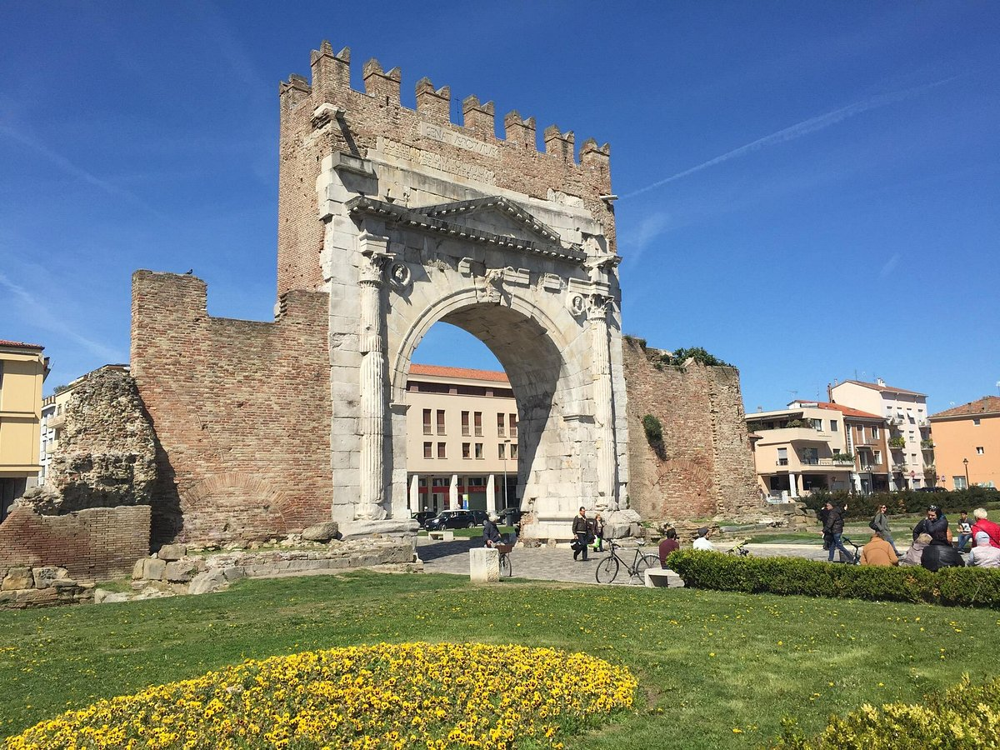

Arco d'Augusto
Id di wikidata dell'Arco d'Augusto: Q1072853
Foto dell'Arco

Immagine dell'Arco d'Augusto.
Query describe Arco d'Augusto
PREFIX wd: <http://www.wikidata.org/entity/>
PREFIX rdfs: <http://www.w3.org/2000/01/rdf-schema#>
PREFIX bd: <http://www.bigdata.com/rdf#>
PREFIX wikibase: <http://wikiba.se/ontology#>
DESCRIBE wd:Q1072853
WHERE {
SERVICE wikibase:label { bd:serviceParam wikibase:language "it,en". }
}
Query select Arco d'Augusto
PREFIX wd:
SELECT DISTINCT ?monuments ?monument_name ?website ?inscription
WHERE {
VALUES ?monuments
{ wd:Q1072853 }
?monuments rdfs:label ?monument_name .
FILTER(LANG(?monument_name) = "it")
OPTIONAL { ?monuments wdt:P856 ?website. } # guardo se il monumento ha il sito web
OPTIONAL { ?monuments wdt:P1684 ?inscription. } # guardo se il monumento ha l’iscrizione
}
LLM 1 Arco d'Augusto
Description
LLM 2 Arco d'Augusto
Description
Query construct Arco d'Augusto di chat GPT
Description
Query construct Arco d'Augusto giusta
Description